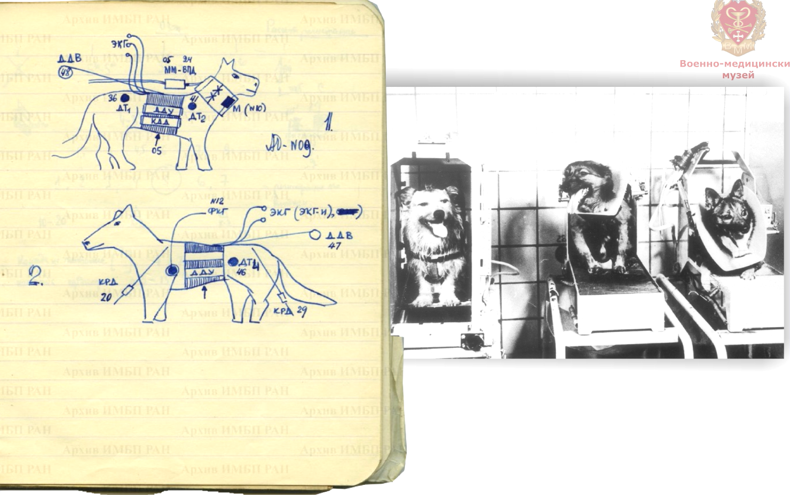
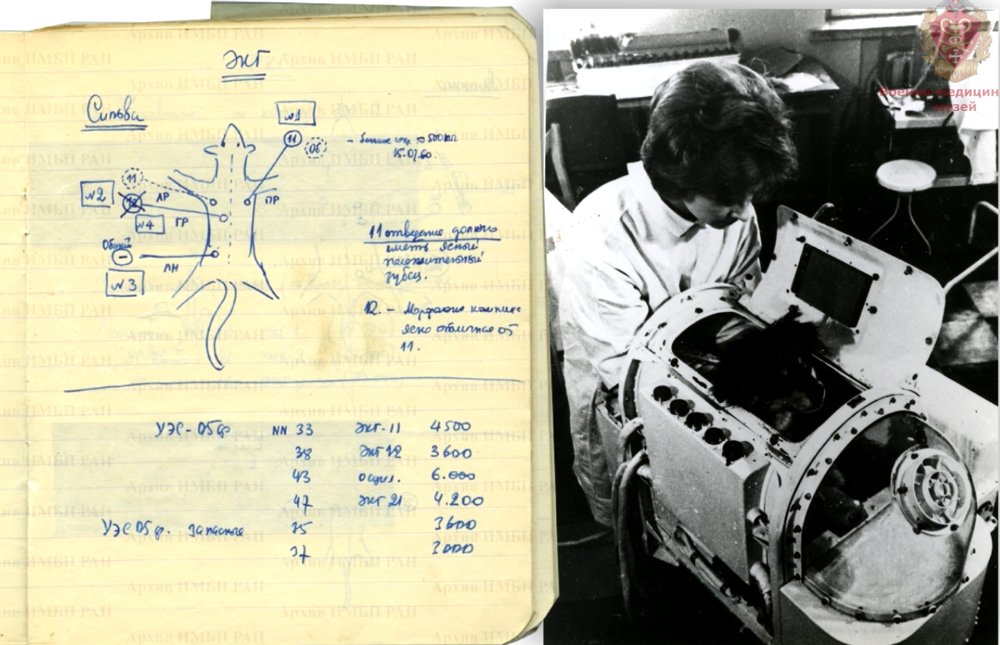
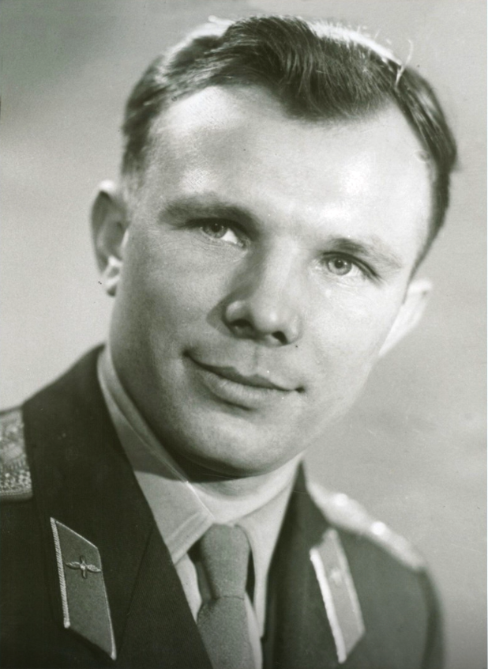
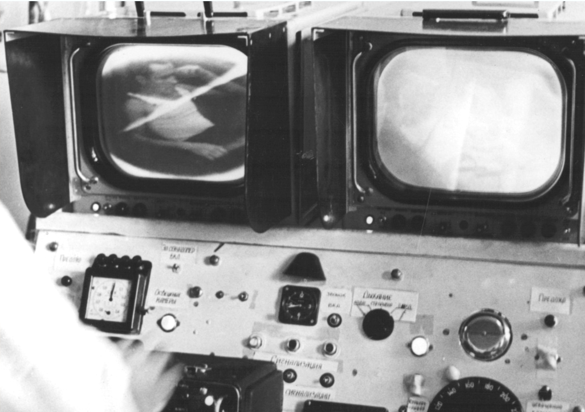
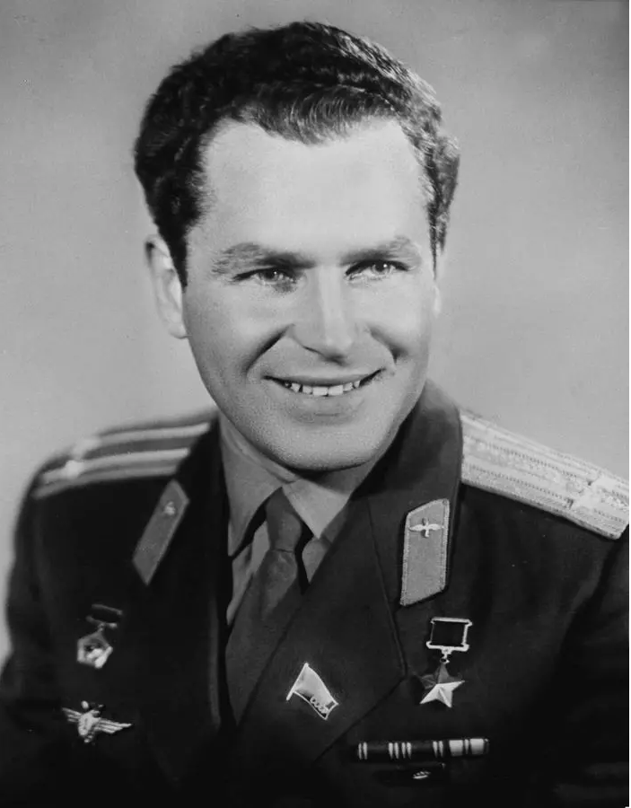
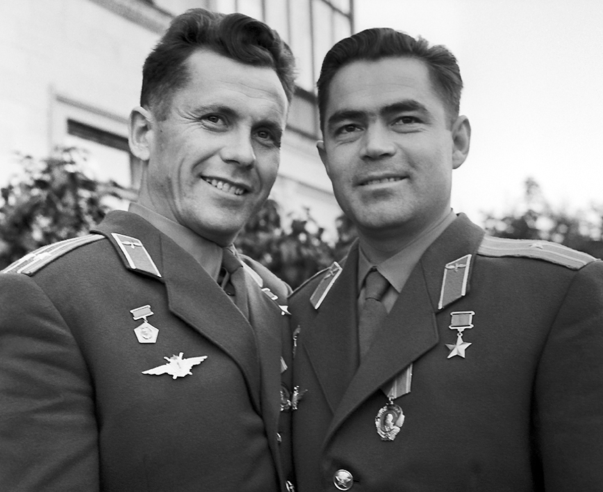
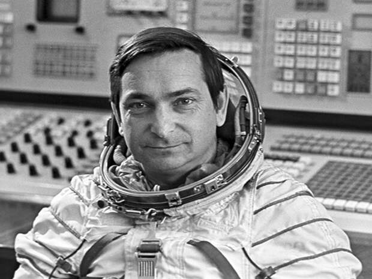
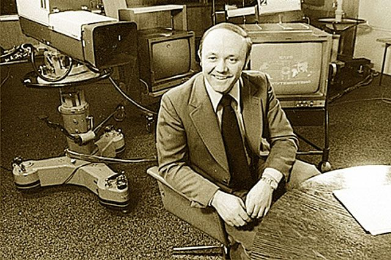
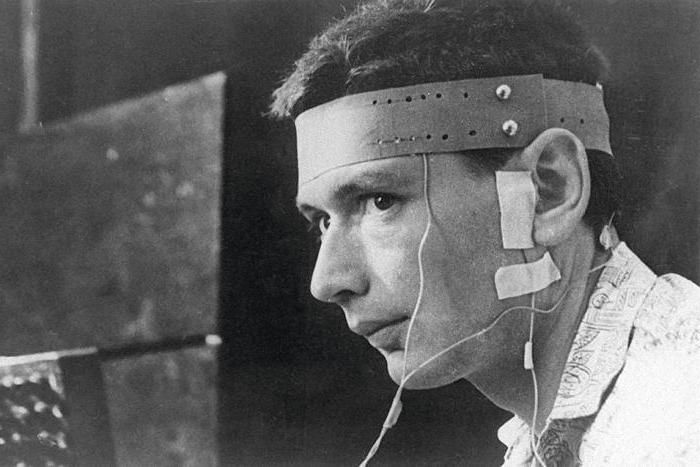
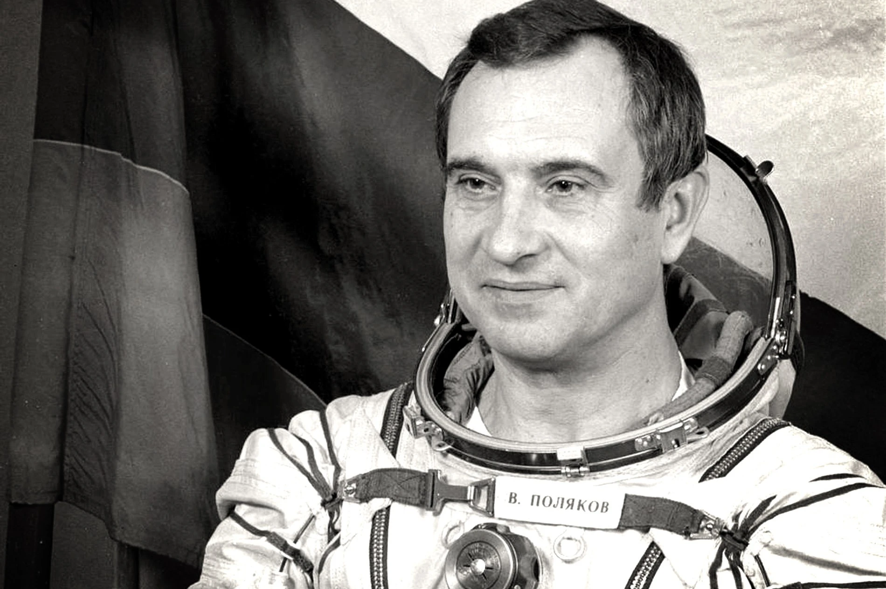

Центрифуга
Перегрузки до 12g — участки взлёта и спуска.
Интерактивный квест
От первых собак на ракетах до орбитальных лабораторий — путь через историю и практические задания.
Добро пожаловать в Центр подготовки космонавтов, Стажер! Меня зовут полковник медицинской службы Алексей Петров. Я руководитель медицинской программы подготовки.
За 9 этапов вы узнаете всю историю космической медицины — от первых собак-разведчиков до современных врачей на орбите. Каждый этап содержит исторические материалы, фотографии из архивов и практические задания.
Готовы? Тогда вперед — к звездам!
Старт медико-биологической программы: от инициативы С.П. Королёва до нарастающих высот и всё более сложных условий для собак-разведчиков.
В 1949 году по инициативе С.П. Королёва в Научно-исследовательском институте авиационной медицины (НИИАМ) начались работы по медико-биологическому обеспечению полётов на ракетах. Руководителем группы был назначен В.И. Яздовский.
Цыган и Дезик первыми поднялись на геофизической ракете Р-1В на высоту 88,7 км и благополучно вернулись. Доказано: живой организм выдерживает такой полёт. За 1951 год в шести запусках участвовали 12 собак.
Длина полосы условно показывает нарастание высоты полётов (не в строгом масштабе).
Хронология ключевых орбитальных и подготовительных полётов — от первого существа на орбите до репетиции пилотируемого корабля.
В полётах измеряли пульс, дыхание, артериальное давление, снимали поведение на видео; отрабатывали гермокабины, жизнеобеспечение и теплозащиту спускаемых аппаратов.
.png)
.png)


Чек-лист идеального кандидата в «отряд хвостатых»
От привыкания к кабине до имитации старта
Олег Георгиевич Газенко вёл подробные рабочие дневники — это была часть научной дисциплины подготовки к полёту.
В дневниках и записях к опытам он закреплял:
В самом полёте у собак дополнительно регистрировали артериальное давление, частоту дыхания, температуру, двигательную активность; с орбиты впервые в мире передавали физиологические данные по телеметрии. Дневники Газенко показывают, как эта «сухая» методика выстраивалась шаг за шагом до полноценного медицинского сопровождения.
У собак, которые благополучно вернулись, космические полёты на здоровье никак не сказались: они оставались здоровыми. У Белки и Стрелки после миссии на весах фиксировали неизменный вес; Стрелка позже стала матерью и дала здоровое потомство — наглядное подтверждение, что орбитальный полёт не нарушил воспроизводительную функцию. Такие наблюдения были важным аргументом при оценке возможности пилотируемых полётов.
.png)

.png)





Загрузка варианта…
В 1959 году начался отбор первого отряда космонавтов. Критерии разрабатывали военные медики: А.Н. Бабийчук, Е.А. Карпов, В.И. Яздовский. Требования были жесточайшими.


Требования по здоровью, роду войск и психике — формальный допуск к подготовке.
Молодой организм лучше переносит перегрузки и неизвестность режима
Укладывается в расчётный объём кабины «Востока»
Запас топлива и посадочная масса — в жёстких лимитах
Модули испытаний как этапы вывода на «орбиту готовности»: от перегрузок до изоляции и вестибулярных стендов.
Перегрузки до 12g — участки взлёта и спуска.
Разрежение, условия близки к высоте порядка 10 км.
Жара до 70 °C — терморегуляция.
3–10 суток сенсорной изоляции — сон и психика.
Кресла, вращения, ориентация — задел против «космической болезни».
Кто мог тогда точно сказать, какими должны быть требования отбора? Поэтому для верности они были явно завышенными, рассчитанными «на двойной, а может быть и тройной запас прочности».
Родился 9 марта 1934 года в деревне Клушино на Смоленщине (Смоленская область). Детство пришлось на войну и оккупацию: семья пережила тяжёлые потери, дом был сожжён.
После школы окончил ремесленное училище и работал литейщиком на заводе; параллельно занимался в саратовском аэроклубе (с 1955 года). В 1957-м женился на Валентине Горячевой и поступил в Оренбургское военное авиационное училище лётчиков. В марте 1960 года зачислен в отряд подготовки космонавтов.
К полёту его готовили Сергей Павлович Королёв и специалисты ОКБ-1 (корабль и ракета); Николай Петрович Каманин и штаб ВВС (организация отряда и тренировок); Центр подготовки космонавтов — первый начальник Евгений Анатольевич Карпов; Владимир Иванович Яздовский, Олег Георгиевич Газенко и их коллеги по космической медицине и физиологии.

Медики и конструкторы опирались на итоги программы с собаками: телеметрия физиологии, гермокабина, скафандр, сценарий спуска.
Полёты Чернушки и Звёздочки с манекеном «Иван Иванович» в костюме и с системами, близкими к боевым.
Около 108 минут на орбите, один виток. Ручное резервное управление (ДУР) — в запечатанном конверте на случай отказа автоматики.
Гагарин прошёл тот же тип испытаний, что и отобранные собаки и манекен, но уже с полётным заданием и возможностью вмешаться в управление при необходимости.
Две ветки подготовки — общая физическая база и стенды, имитирующие условия полёта и спуска.
Ежедневный режим и координация
Стенды и экстремальные режимы



Перед стартом «Востока-1» врачи фиксировали базовые показатели и сравнивали их с допуском к полёту; в космосе работала бортовая аппаратура, передававшая данные на Землю.
Спокойный ритм перед выходом к ракете — один из критериев готовности.
Артериальное давление в пределах, согласованных с медкомиссией.
Укладывалась в расчёт посадочной массы и скафандра «Востока» (рост Гагарина — 169 см).
Подберите пульс, систолическое давление и массу, близкие к предстартовому состоянию Ю.А. Гагарина.

«Восток-2» — первый многовитковый полёт: около 25 часов 18 минут, до 17 витков. Титову было 25 лет — на тот момент самый молодой космонавт.
Впервые приём пищи в невесомости с тюбиков, сон на орбите, подробная киносъёмка Земли. Космонавт в пилотируемом полёте подробно описал космическую болезнь (головокружение, тошнота, иллюзия перевёрнутости).
Урок для медиков: вестибулярная подготовка, режим работы и питания, профилактика сенсорного конфликта.

Первый групповой полёт: «Восток-3» и «Восток-4» сошлись на орбите на расстояние около 5 км, радиосвязь между кораблями.
Николаев — рекорд длительности (около 4 суток), Попович — около 3 суток. Впервые расширенный мониторинг: ЭЭГ, ЭОГ, кожно-гальваническая реакция, изучение совместимости экипажей.
«Восток-6» — первая женщина в космосе. Позывной «Чайка», почти 3 суток на орбите, 48 витков. Параллельно в космосе — Валерий Быковский на «Востоке-5» (позывной «Ястреб»): впервые одновременно два пилотируемых корабля с мужчиной и женщиной.
Медики зафиксировали особенности реакций женского организма на стресс и невесомость; закрепили принцип индивидуальной подготовки и противопоказаний по состоянию здоровья.

«Восток-5» — около 5 суток на орбите; в те же даты полёт Терешковой. Данные использовали для сравнения мужской и женской физиологии в одних и тех же условиях программы.

Первый многоместный корабль без скафандров в кабине — 24 часа на орбите. Комаров, Феоктистов, Егоров: проверка возможности работы не только пилота, но и специалиста и врача в одном объёме кабины.
«Восход-2» — первый выход человека в открытый космос (около 12 минут). Врачи в реальном времени следили за пульсом (до 162 уд/мин) и температурой тела (рост примерно на 1,4 °C).
С каждым полётом нагрузка на организм росла — дольше орбита, двойные запуски, новая кабина и выход в космос. Набор каналов телеметрии и наземных протоколов расширялся шаг за шагом.
ЭКГ и частота дыхания остаются ядром мониторинга; закрепляется схема передачи данных на Землю и работа врачей с «трассой» полёта.
Добавляются ЭЭГ, ЭОГ и кожно-гальваническая реакция (КГР) — оценка бодрствования, утомления и психофизиологического состояния при длительных полётах и сдвоенных экипажах.
На «Восходе» усложняется сценарий: появляются сейсмокардиография и динамометрия — больше информации о работе сердца и мышечном усилии в невесомости.
При ВКД важны тепловой режим скафандра и нагрузка на сердечно-сосудистую систему: добавляются измерения температуры в скафандре и усиленный контроль пульса — в том числе для оперативных решений командира экипажа.
Три фразы верны, в одной спрятана неточность. Отметьте только неверную фразу и нажмите «Проверить».
Физиолог, академик РАН, генерал-лейтенант медицинской службы. С 1955 года — в космической биологии и медицине; участвовал в программах с собаками и в подготовке полёта Ю.А. Гагарина.
Директор ИМБП с 1969 по 1988 год: системы защиты экипажа, медицинское обеспечение длительных полётов, развитие наземной базы исследований. Один из символов становления отечественной космической медицины.

Врач, кандидат медицинских наук. С 1964 года в ИМБП: прошёл путь от младшего научного сотрудника до начальника учебно-тренировочного центра медико-биологической подготовки космонавтов.
Более 30 лет участвовал в медицинском обеспечении пилотируемых полётов и экспериментов на биоспутниках; разрабатывал методы психофизиологического отбора и подготовки. В 1965 году проходил подготовку к полёту по медицинской программе (макет «Восход»); назначение в экипаж не состоялось после закрытия программы. Автор десятков научных работ; широкой публике известен как создатель и ведущий передачи «Клуб путешественников».
С 1960-х задача сместилась с «выдержит ли человек первый виток» к длительным экспедициям, совместным экипажам и точной телеметрии. Ниже — опорные цифры и наглядная шкала длительности: от доказательного суточного полёта до рекорда Полякова.
* Полоска для 1 суток увеличена для читаемости; в реальных долях она составляла бы менее одного процента от 437 суток.

26 лет, сотрудник ИМБП. Полёт на корабле «Восход-1» длился 24 часа. В экипаже: В. Комаров, К. Феоктистов, Б. Егоров.
Задачи: вестибулярный аппарат, зрение, слух, координация; забор крови для анализов; психологические тесты.
Аппаратура: «Полином» (ЭЭГ, ЭОГ, динамограмма), «Резеда-2» (дыхание).
Итог для медицины: показано, что врач на борту нужен для полноценных научных экспериментов, а не только как «пассажир».

Врач-исследователь ИМБП. Два полёта: 1988–1989 (240 суток) и 1994–1995 (437 суток — мировой рекорд длительного пребывания одного человека в космосе на тот период).
Изучал адаптацию к невесомости, костно-мышечную систему, психику при изоляции. Практически доказал: человек может сохранять работоспособность при наблюдении более года — данные важны для планирования дальних полётов.
Все восемь карточек сразу с текстом — четыре пары. Нажмите первую карточку, затем вторую: если они одной пары (по смыслу раздела выше), обе закрепятся. Соберите четыре пары — кнопка «Далее» откроется сама. Повторный клик по выбранной карточке снимает выбор.
Космическая медицина изначально решает узкую задачу — сохранить здоровье экипажа. Но сенсоры, алгоритмы и клинические протоколы, отработанные для орбиты, снова и снова «приземляются»: в телемониторинге, реабилитации, геронтологии и даже в изоляционных экспедициях.
Удалённый мониторинг пульса, давления и жизненных знаков, отработанный для космонавтов, лёг в основу телемедицины: отдалённые ФАПы, скорая помощь, мониторинг после выписки, сельские консультации.
Длительная невесомость даёт «ускоренную модель» потери костной массы и мышц. Протоколы противодействия и понимание механизмов помогают в реабилитации малоподвижных пациентов и в работе с остеопорозом.
Эксперименты вроде «Марс-500» и наземных симуляций (SFINCSS и др.) пересекаются с задачами арктических партий, экипажей подлодок, полярных станций: режим, конфликты, утомление, поддержка психики.
Контроль ЭЭГ, вариабельности сердечного ритма и нарушений сна на орбите родственен задачам авиации, диспетчерских служб и профессий с ночными сменами — те же принципы переноса на «земные» вахты.
На станции изучают рост биоплёнок и устойчивость микроорганизмов в невесомости и замкнутом объёме — это перекликается с проблемой госпитальных инфекций и поиском новых подходов к антисептике и антибиотикам.
Вестибулярные тренажёры, нагрузочные костюмы и пошаговое наращивание нагрузки после возвращения с орбиты близки по логике к неврологической реабилитации и восстановлению после инсультов и травм опорно-двигательного аппарата.
Прочитайте каждую ситуацию и отметьте, о чём она в первую очередь: о переносе опыта на больницы и жизнь на Земле или о самом полёте и работе экипажа на орбите.
С 2012 года Роскосмос проводит открытые наборы: в отряд приходят не только лётчики, но и инженеры, биологи, врачи — профессии, без которых невозможен долгий космос.
С конца 1940-х годов в стране шли системные работы по тому, как выживать и работать вне Земли: наземные лаборатории, полёты животных, отбор и допуск людей, длительные орбитальные экспедиции и телемедицина.
Начало системных работ в НИИАМ: В.И. Яздовский и команда закладывают основы космической биологии.
Первые суборбитальные полёты собак (Цыган и Дезик, 22 июля) — проверка живучести и телеметрии.
Полёт Лайки на 2-м искусственном спутнике Земли (3 ноября) — первый биологический объект на орбите.
Белка и Стрелка — успешное возвращение (19 августа); доказательство возможности безопасного спуска.
Последние полёты собак Чернушка и Звёздочка с манекеном «Иван Ивановичем» (9 и 25 марта) — репетиция пилотируемого полёта.
Первый полёт человека — Ю. Гагарин, «Восток-1» (12 апреля); медицинский допуск и телеметрия в бою.
Суточный полёт Г. Титова, «Восток-2» (6 августа); первая серьёзная вестибулярная и сенсорная нагрузка.
Первый групповой полёт — А. Николаев и П. Попович (август); расширенный психофизиологический мониторинг.
В. Быковский («Восток-5») и В. Терешкова («Восток-6»), июнь; сравнение мужской и женской физиологии в одной программе.
Создан Институт медико-биологических проблем (ИМБП) — центр подготовки и исследований на десятилетия вперёд.
«Восход-1»: В. Комаров, К. Феоктистов, первый врач на орбите — Б. Егоров (12 октября).
Первый выход в открытый космос — А. Леонов (18 марта); пиковые нагрузки на ССС и тепловой режим скафандра.
Первая орбитальная станция «Салют» — длительные режимы и новые задачи для медиков.
Создание отряда космонавтов ИМБП (5 мая) — врачи и физиологи среди кандидатов в космос.
Первый длительный полёт врача ИМБП — В. Поляков (240 суток); О.Г. Газенко завершает руководство институтом (директор с 1969 г.).
Рекорд Полякова — 437 суток (22 марта); граница адаптации человека к почти годовой изоляции.
МКС: непрерывный медмониторинг, телемедицина, многомесячные экспедиции и «двойная отдача» для земной медицины.
Открытые наборы в отряд космонавтов — расширение профессий и новые критерии отбора.
Подготовка к Российской орбитальной станции — следующий этап для медико-биологического обеспечения.
Без медицины и физиологии не состоялся бы ни один запуск с живым существом: сначала собаки и манекен задали каналы телеметрии и пределы нагрузки, затем врачи допустили Гагарина и Титова, потом — длительные полёты, станции и выходы в открытый космос. Каждый новый срок на орбите — это сотни решений о здоровье, сне, питании, психике и реабилитации. Космос расширяет границы техники, но человек остаётся главным «кораблём» — и беречь экипаж так же важно, как рассчитывать траекторию.
Вы прошли квест от первых ракет с собаками до сегодняшних стандартов отбора и орбитальных лабораторий.
Ваши результаты: —